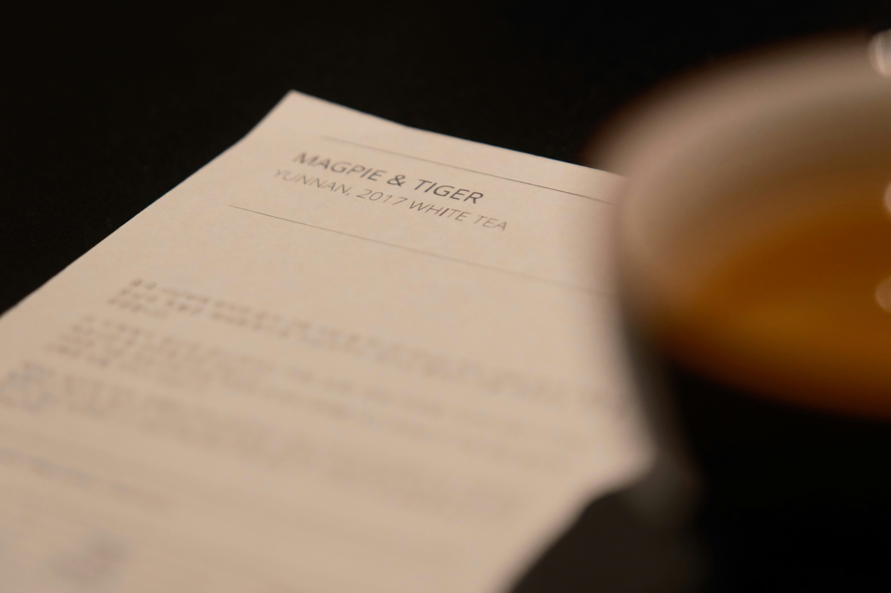
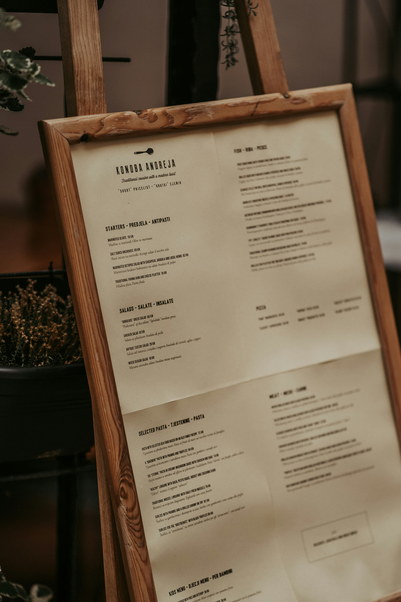
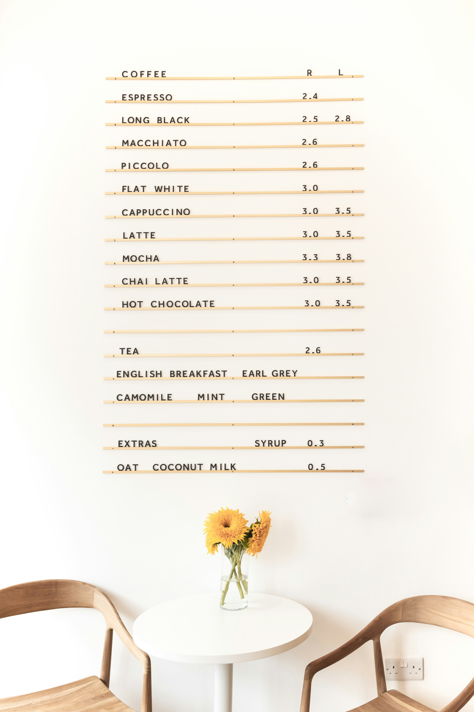
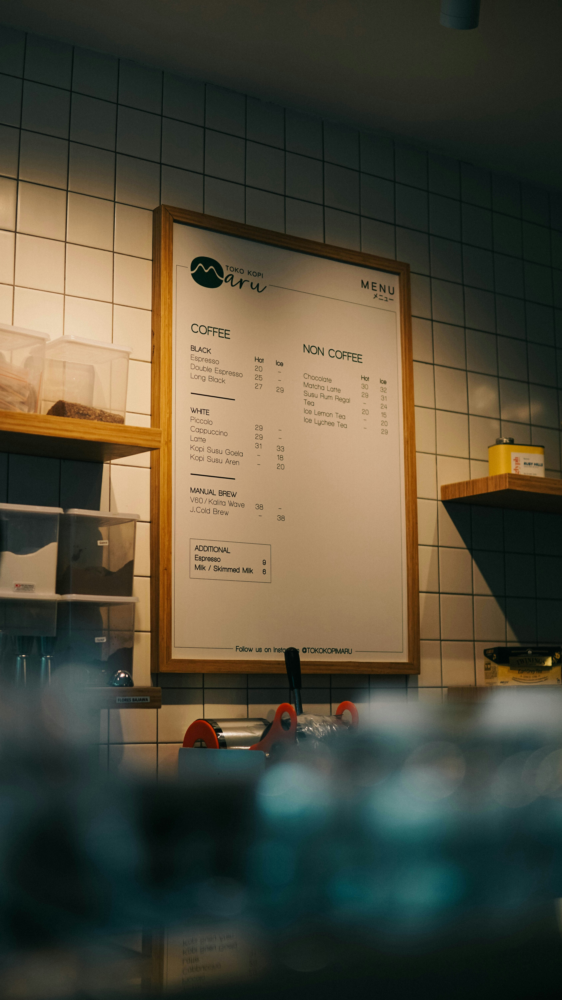

Menu design is a crucial yet often overlooked element of the fine dining experience. For high-end restaurants, the menu is the first tangible item a guest interacts with, setting the tone for the entire meal before a single dish arrives. A beautifully crafted menu with considered typography, quality materials, and thoughtful layout signals to guests that every detail has been carefully attended to, reinforcing the restaurant's commitment to excellence. Just as the interior décor and plating presentation communicate luxury, a well-designed menu elevates the perceived value of the food and creates a seamless, immersive experience that keeps guests coming back.
When guests choose to dine at a high-end restaurant, their expectations extend far beyond the food. The menu is a physical embodiment of the restaurant's identity, and diners notice every detail. Guests expect crisp, elegant typography that is easy to read without feeling clinical, and descriptions that evoke the care and craft behind each dish without being overly verbose. The materials matter too a weighty card stock, a leather binding, or even a uniquely folded single sheet all communicate a level of thoughtfulness that guests at this level have come to expect.
Beyond aesthetics, fine dining guests expect clarity and confidence in the menu's layout. Dishes should be organized intuitively, guiding the guest through the experience rather than overwhelming them with choices. Pricing, when displayed, should feel understated rather than prominent because at this level, the focus is on the experience, not the transaction. Above all, guests expect the menu to feel like a preview of something special, a promise that what follows will be worth every moment.



